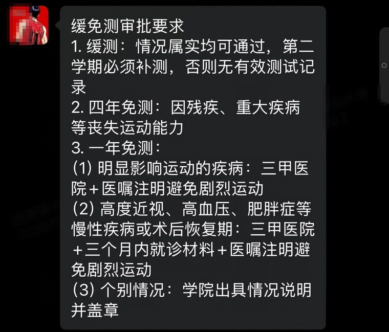
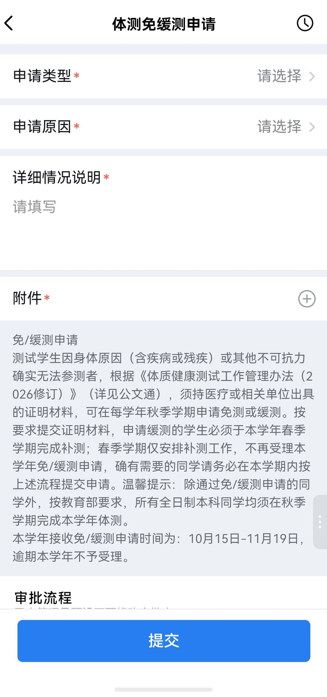
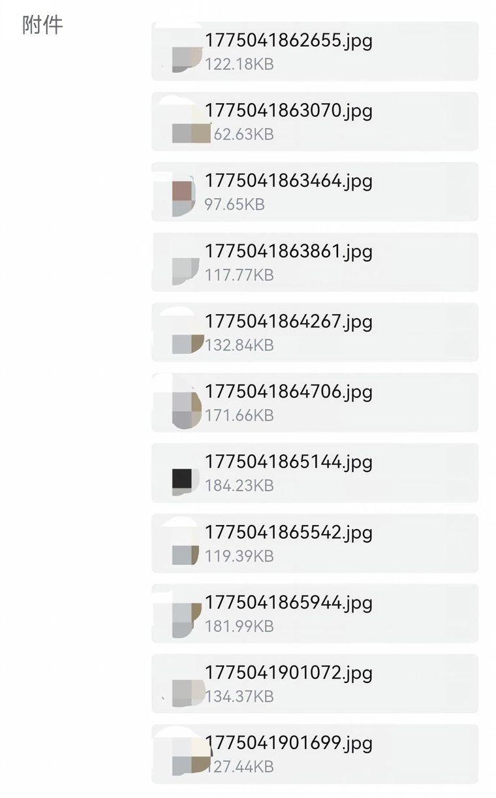
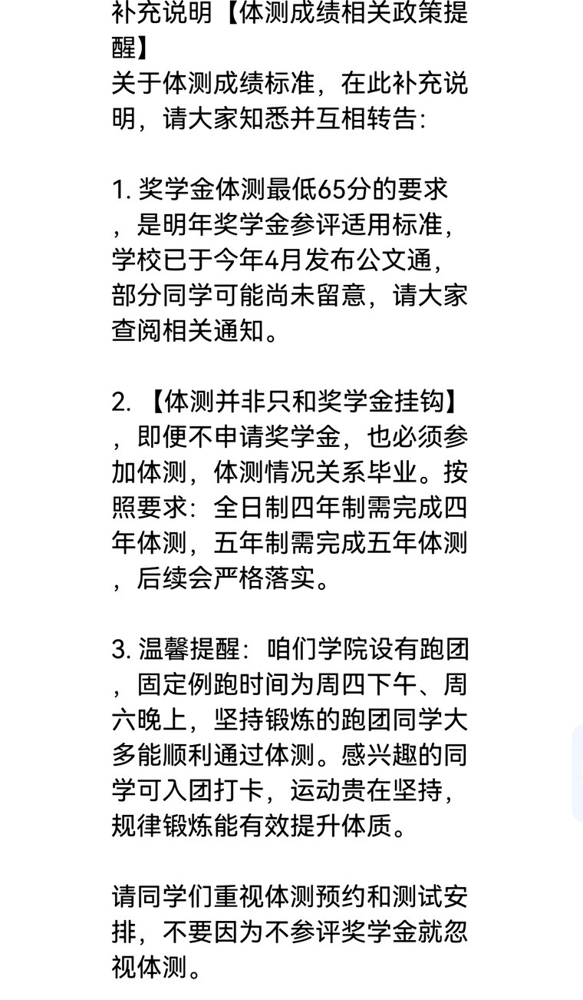
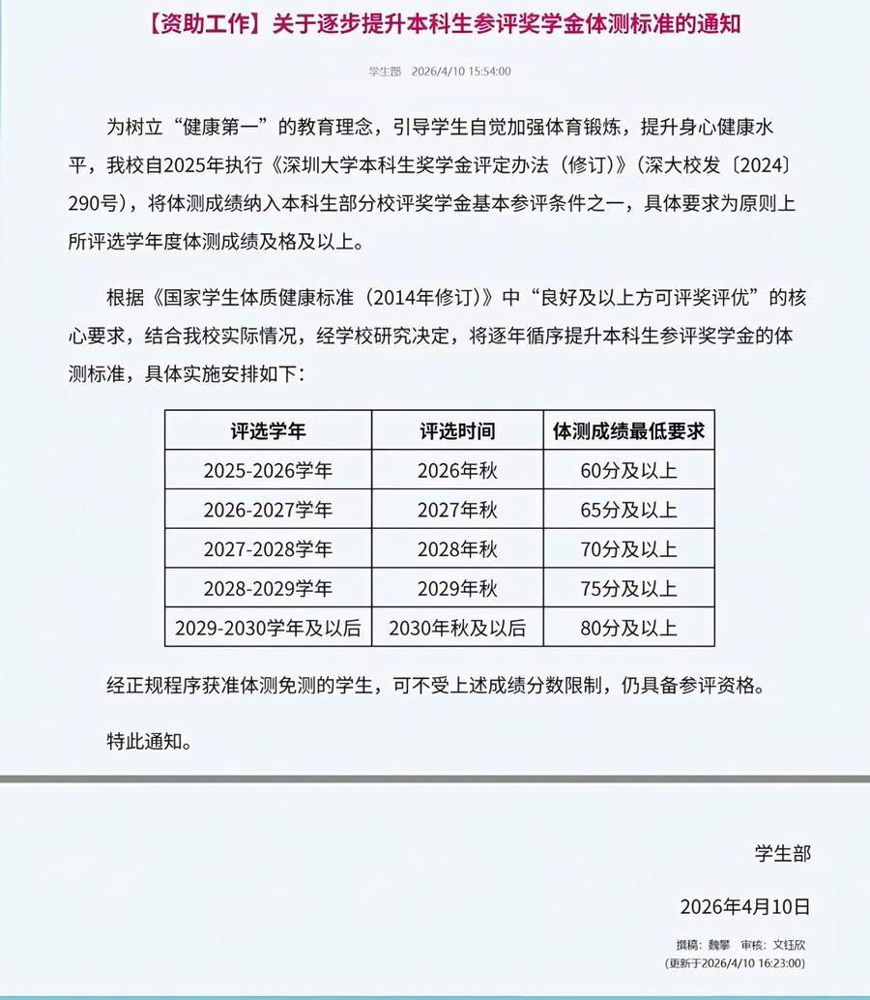
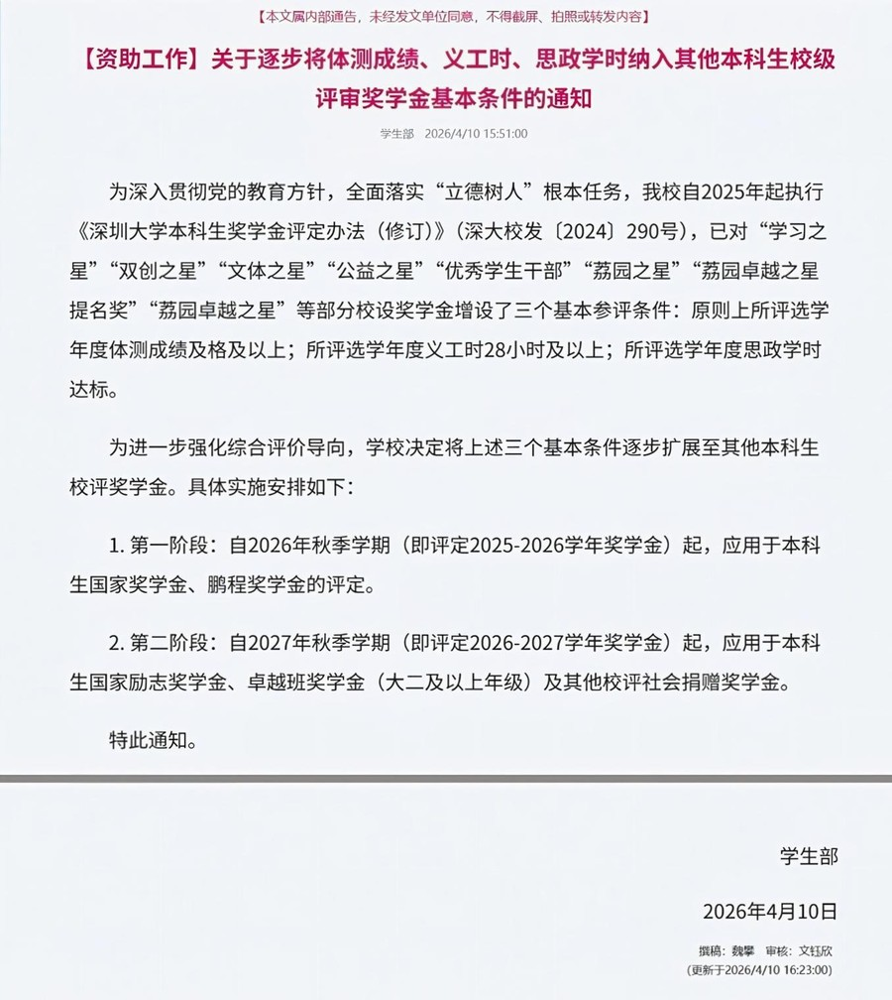

体测免测 / 缓测申请
能不能免、要开什么证明、在哪儿交、怎么提交。
受理窗口：10 月 15 日 — 11 月 19 日。
按教育部规定，只有第一学期受理免测与缓测申请，第二学期只安排补测、不再接收申请。
逾期本学年不予受理。
明面上的规矩
- 残疾、重大疾病导致丧失运动能力的，可申请四年免测。
- 明显影响运动的疾病，凭三甲医院证明 + 医嘱写明「避免剧烈运动」，可申请一年免测。
- 高度近视（近视 ≥ 600 度）、高血压、肥胖症等慢性病，或术后恢复期，除三甲医院证明和医嘱外，还需三个月内的就诊材料。
- 情况属实的都可以申请缓测，但第二学期必须补测，否则本学年没有有效体测记录。
- 四年免测一次审批、四年通用，通过后本科期间不再提交材料。一年免测只覆盖当学年，下一年要重新申请。
纸面上的选择
| 类型 | 适用情况 | 材料要求 | 有效期 |
|---|---|---|---|
| 四年免测 | 残疾、重大疾病等丧失运动能力 | 三甲医院出具的证明材料 | 本科四年，无需重复申请 |
| 一年免测 | 明显影响运动的疾病 | 三甲医院证明 + 医嘱注明避免剧烈运动 | 当学年，需逐年申请 |
| 一年免测 | 高度近视（近视 ≥ 600 度）、高血压、肥胖症等慢性病，或术后恢复期 | 三甲医院证明 + 三个月内就诊材料 + 医嘱注明避免剧烈运动 | 当学年，需逐年申请 |
| 缓测 | 情况属实即可通过 | 医疗证明 | 当学年，须补测 |
| 个别情况 | 不属于上述情形但确实无法参测 | 学院出具情况说明并盖章 | 视审批结果 |
容易误解的地方
四年免测一次审批、四年通用，通过后本科期间不用再交材料。一年免测只保当学年，第二年要重新走一遍申请、重新交材料。
某学院管理体育老师泄露的目前免测审核口径
某学院负责体育管理的老师在群里发的四类判定标准，基本就是实际审核时的尺度：

免测的核心是两条：三甲医院开的证明，以及医嘱里注明「避免剧烈运动」。
不过第二条不是死的：有学长没有「避免剧烈运动」的医嘱也通过了。但三甲医院是硬要求，这条没有例外，校医院和社康开的不算。
材料清单
必须包含（三项里至少一项）
- 病历页
- 疾病诊断书
- 出院小结
建议一并提交（越多越好）
- 化验单
- 检查报告单（CT、MRI、B 超等）
- 门诊记录、用药记录、复诊记录
这些可以一并提交，尽量多交。材料越全，审核越顺，遇到存疑时也更容易通过。
开证明时注意
- 必须是三甲医院，校医院或社康开的证明不符合要求。
- 慢性病与术后恢复期，就诊材料需在三个月内。
- 医嘱或诊断书上要有「避免剧烈运动」字样，只写「注意休息」通常不够。
- 材料拍清楚，尤其是姓名、日期、诊断结论和医院公章。
办理流程
- 在深圳大学企业微信进入申请页面。 工作台 → 体质测试 → 体测免 / 缓测申请
- 填写申请类型、申请原因，写清详细情况说明，上传证明材料。
- 提交后由所在学院负责人先审核。
- 学院通过后，转体质健康测试中心终审。
- 审核结果在申请详情页查看。页面底部有「再次提交」按钮，没通过可以在窗口期内重新提交。

详细情况说明怎么写
这一段是审核人判断的主要依据，建议按「诊断结论 → 为什么不能剧烈运动 → 符合哪一条免测条件」的顺序写，把诊断书上的关键信息复述一遍，不要只写「身体不适」。
附件：手头有的全交
提交的时候，我把所有检查内容和文件都传了上去，一共 11 份——病历、检查报告、诊断书、化验单全在里面，没有挑挑拣拣。
建议你也这样做：手头上有的材料全部提交，不要只挑一两份。材料越全，体测中心的老师越容易判断你的情况，审核通过的概率也越高。

为什么建议全交
免测审批是人工看材料判断的。材料给得越完整，老师越不需要来回问。
和奖学金、毕业的关系
深圳大学从 2024 年才开始把体测 60 分和奖学金挂钩。在这之前，学校甚至把「不用体测」当作招生宣传的卖点。
2026 年起开始改革，向广州的高校全面看齐：逐步把评奖评优的体测门槛提高到 80 分，同时也在研究要不要挂钩毕业。
但到现在为止，深圳大学没有出台任何文件说明体测是否影响毕业。所以暂时可以认为：体测只挂钩奖学金，不影响毕业。
下面这张是某学院的通知，仅供参考。没有正式文件，通知里说的「关系毕业」也只能先当参考。

奖学金参评的体测最低分（逐年提高）
| 评选学年 | 评选时间 | 体测成绩最低要求 |
|---|---|---|
| 2025–2026 学年 | 2026 年秋 | 60 分及以上 |
| 2026–2027 学年 | 2027 年秋 | 65 分及以上 |
| 2027–2028 学年 | 2028 年秋 | 70 分及以上 |
| 2028–2029 学年 | 2029 年秋 | 75 分及以上 |
| 2029–2030 学年及以后 | 2030 年秋及以后 | 80 分及以上 |
免测同学看这里
经正规程序获准体测免测的学生，不受上述分数限制，仍具备奖学金参评资格。这也是很多人选择走免测流程的原因之一。
另外，自 2026 年秋季学期起，体测成绩、义工时、思政学时三项条件正逐步扩展到更多校级奖学金。具体适用范围见学校公文通原文。

